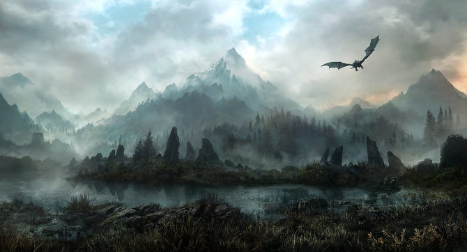

Скайрім (ориг. «Skyrim», дослівно - Оправа неба) - одна з провінцій Тамріеля, друга батьківщина нордлінгів. Скайрім розташований на півночі Тамріеля. Межує з Хай Роком і Хаммерфеллом на заході, Сіроділом на півдні і Морровіндом на сході. Відомий також як Старе Королівство або Вітчизна, був першим регіоном Тамріеля, заселеним людьми з континенту Атмора. В Імперії поширений стереотип, що від Скайріма варто триматися подалі: не тільки через снігові бурі, але й через пристрасть Нордів до спиртних напоїв, особливо до меду, і бійок без особливого приводу. Нордлінгів Скайрімі вважають варварами, але вони лише «вільні вбивати те, що їм хочеться, і коли хочеться, вільні поклонятися тому, що вони виберуть самі»